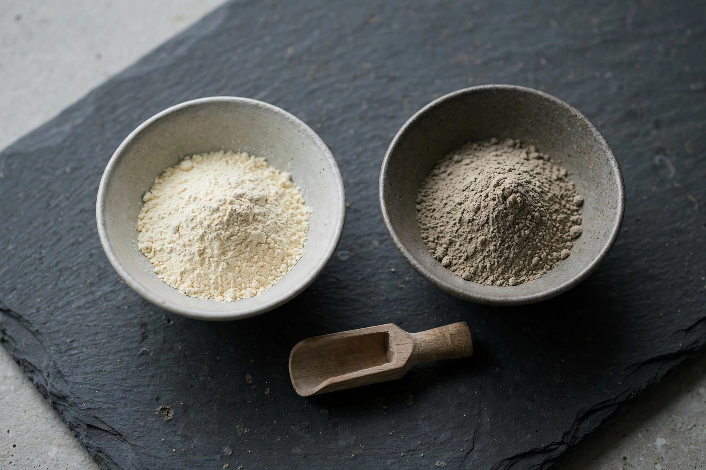

砥の粉と地の粉の違い ― そして、粉が手に入りにくくなっている話

金継ぎや漆の下地作りで名前の挙がる「砥の粉（とのこ）」と「地の粉（じのこ）」。どちらも白っぽい粉で、名前もよく似ていますが、原料も役割もまったく別物です。混同して使うと仕上がりに響くので、ここで整理しておきます。
原料と役割の違い
- 砥の粉：砥石の産地として知られる京都・山科などで採れる土を原料とする、きめの細かい粉。漆と小麦を練り合わせた麦漆の増量・粘度調整や、欠けた部分を埋める刻苧（こくそ）の材料として使います。接着工程の要です。
- 地の粉：珪藻土を焼成した粉で、砥の粉より粒が粗め。漆器の下地に厚みを持たせるために、錆漆（さびうるし）として木地に塗り重ねる用途が中心です。器の形を整える側の材料と言えます。
平たく言えば、「くっつける・埋める」のが砥の粉、「土台を作る・厚みを出す」のが地の粉。金継ぎの接着だけなら砥の粉が主役で、地の粉は欠けが大きく土台から作り直すような修理で出番が来ます。
静かに進む、粉の供給不足
実は今、この粉そのものが手に入りにくくなっています。製造を担ってきたメーカーの廃業が相次ぎ、材料店によっては「生漆の販売実績に応じた割り当て販売」という、かつてない運用を始めたところも出てきました。大きな需要があるわけでもないのに供給が細る——粉は、伝統材料の中でもとりわけ生産者の数が少ない領域なのです。
粉がなければ、漆はあっても接着ができません。砥石や金粉に比べて地味な存在ですが、砥の粉・地の粉は金継ぎと漆工芸の「縁の下の要石」です。私たちが材料のリフィル供給に取り組む理由の一つは、この細りゆく供給網を、使う人と作る人のあいだで支え直したいと考えているからです。
まとめ：砥の粉＝接着・充填用（山科の土）、地の粉＝下地・土台用（焼成珪藻土）。用途に合わせて選ぶことが、仕上がりと材料の無駄をなくす第一歩です。